AI가 맡는 마케팅 일
게스트는 엔씨하이라는 회사에서 견적 서비스 '세모(세상 모든 견적)'의 마케팅과 디자인을 맡고 있어요. 블로그, 스레드, 인스타그램을 운영하고, 콘텐츠 제작은 꽤 자동화돼 있어요. 커뮤니티 활동도 막 시작했어요.
출발점은 브랜드 문서예요. 타깃을 날카롭게 정의한 md 파일을 만들어 두면, AI가 그걸 기준으로 블로그 글을 여러 편 써요. 사람은 그 글을 읽고 검수해요. 진행자도 "브랜드를 어떻게 정의했는지 그 문서가 되게 중요하겠다"고 맞장구쳐요.
얼마나 빨라졌나요
3년 전에는 릴스 하나를 편집하는 데만 두세 시간이 걸렸어요. 지금은 기획과 스토리보드만 잘 짜 두면 검수까지 포함해 20~30분이면 끝나요. 아래 막대는 그 두 시간을 같은 눈금으로 그린 거예요.
진행자는 마케팅이 사람의 감성이 많이 들어가서 AI로 하기 가장 어려운 영역이라고 봐요. SNS(Social Networking Service)에는 '딸깍'으로 올리고 조회수가 터졌다는 이야기가 많지만, 모든 성과가 보장되지는 않는다는 데 두 사람 모두 동의해요.
AI 글에서 냄새가 나는 세 가지 이유
마케팅에서 AI가 가장 못하는 건 카피라이팅, 특히 후킹이라고 게스트는 말해요. AI가 쓴 글은 '맛이 없고 냄새가 난다'고 느껴서 이유를 따져 봤고, 세 가지로 정리했어요.
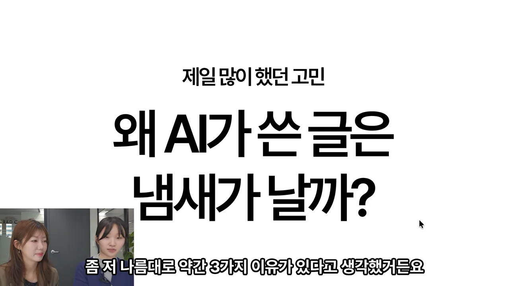
1. 번역투
위의 회색 줄이 AI가 쓴 문장이고, 아래 분홍 줄이 게스트가 하고 싶었던 말이에요. '첫 번째 장소'는 한국어에서 안 쓰는 표현이라 읽는 사람이 한 번 더 풀어야 해요. "여기가 세모 서비스가 등장하는 지점입니다"도 영어('This is where SEMO comes in')로는 그럴싸하지만 한국어로 옮기려면 손이 가요.
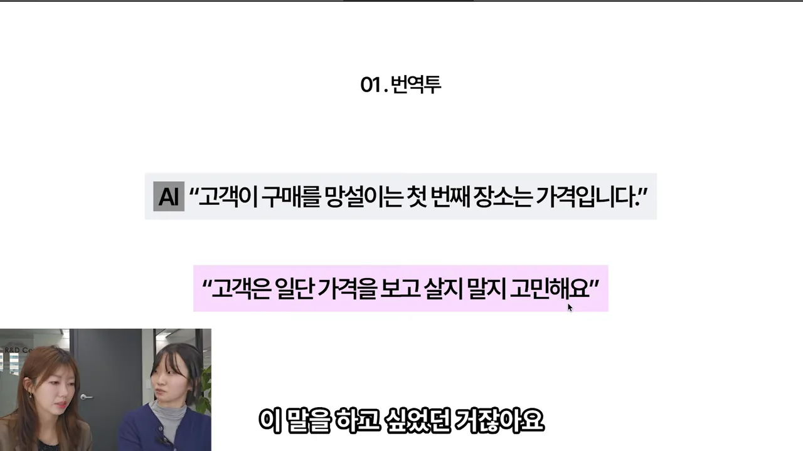
2. 눈치 없는 문장
이번엔 순서가 반대예요. 위 분홍 칸이 게스트의 원래 말이고, 아래 회색 줄이 AI가 다듬은 결과예요. '디자인도 배워서 둘 다 하는 사람'이 '글보다 디자인으로 칭찬받던 마케터'가 되니, 글을 못 써서 디자인으로 옮긴 사람처럼 읽혀요. 무엇을 강조할지 사람끼리는 말 안 해도 알지만 AI는 모른다는 거예요.
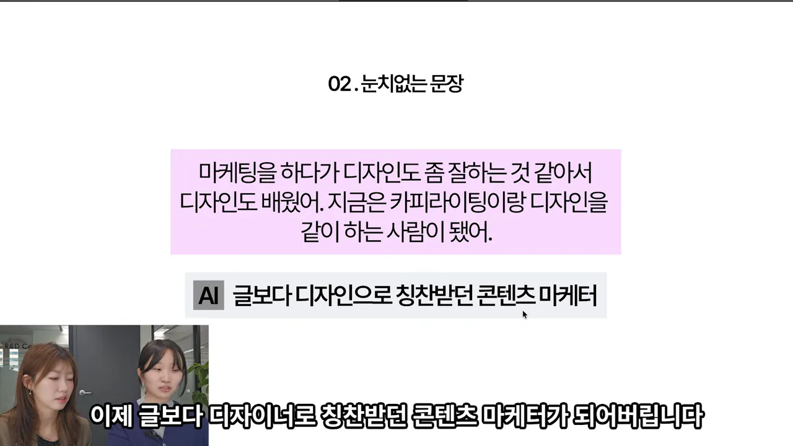
3. 제품 중심 화법
AI는 서비스가 하는 일을 그대로 설명해요. 하지만 고객은 입찰 공고나 납품이라는 단어부터 낯설어할 수 있어요. 분홍 칸처럼 고객이 실제로 하는 고민의 말투로 바꿔야 해요.
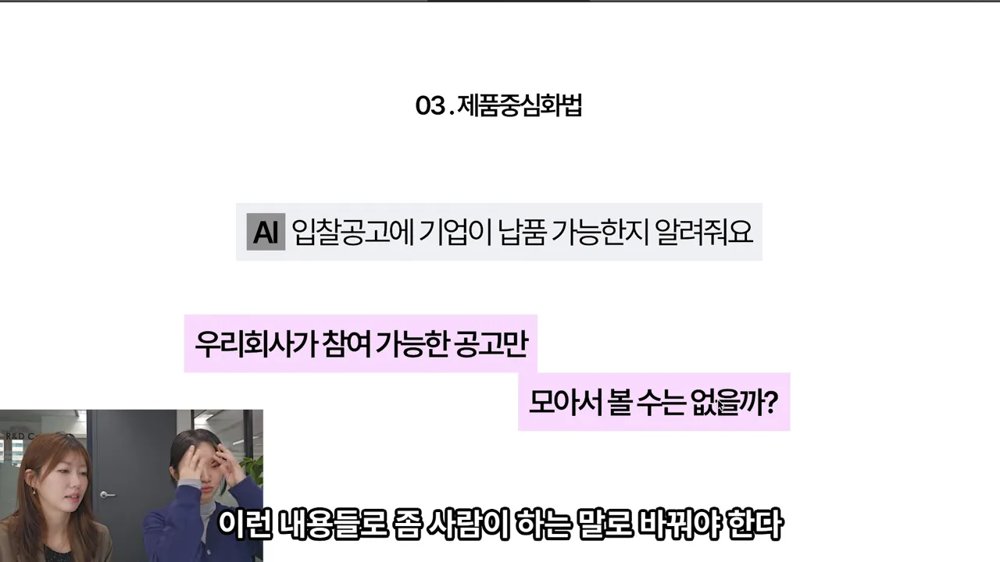
세 가지를 한 표로 모으면 이래요.
| 이유 | AI가 쓴 문장 | 사람이 하려던 말 |
|---|---|---|
| 번역투 | '고객이 구매를 망설이는 첫 번째 장소는 가격입니다' | 고객은 일단 가격을 보고 살지 말지 고민해요 |
| 눈치 없는 문장 | '글보다 디자인으로 칭찬받던 콘텐츠 마케터' | 디자인도 배워서 지금은 카피라이팅과 디자인을 같이 하는 사람 |
| 제품 중심 화법 | '입찰공고에 기업이 납품 가능한지 알려줘요' | 우리 회사가 참여 가능한 공고만 모아서 볼 수는 없을까? |
코리안 라이팅 룰: 한국인처럼 쓰게 하는 스킬
게스트는 이 약점을 스킬로 메워요. 채널마다 글맛이 달라서 스킬도 따로 둬요. 아래 목록에서 Semo writing, magazine, threads, instagram skill이 채널별 스킬이고, 맨 아래 Korean writing rules skill이 모든 글에 공통으로 쓰는 규칙이에요.
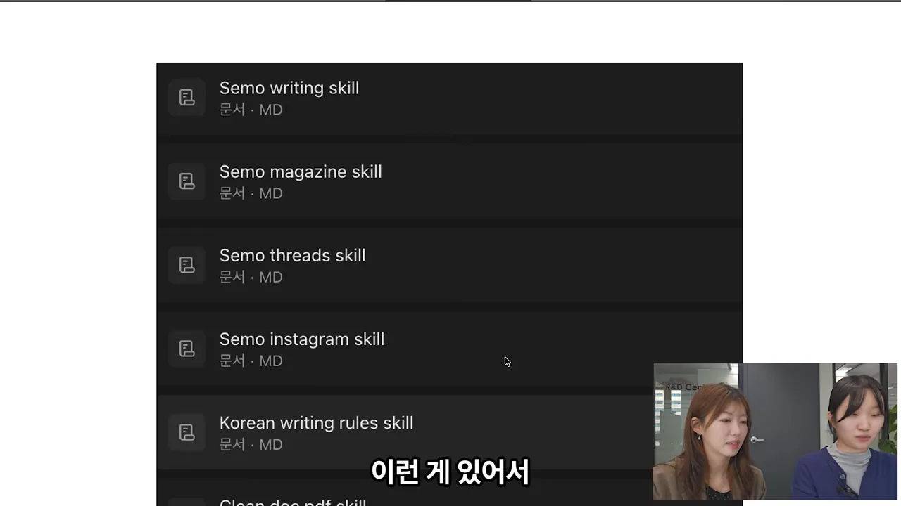
가장 중요하다고 꼽은 건 Korean writing rules예요. 브랜드와 상관없이 어떤 글이든 한국인처럼 쓰라고 다져 둔 규칙이에요. 화면의 '콘텐츠 작성·검수 규칙.md'는 번호마다 규칙 한 줄과 풀이가 붙어 있어요. 1번 '중학교 3학년이 읽어도 이해할 수 있게 쓴다'는 앞에서 본 입찰, 납품 같은 단어를 겨냥해요. 3번은 '첫 자리', '변화의 시작점' 같은 추상 표현을 콕 집어 금지해요. 번역투 문제에 대한 답이에요.
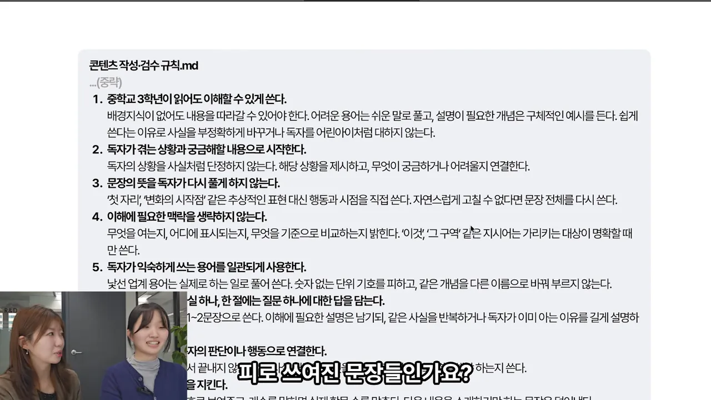
화면에 보이는 규칙을 옮기면 이래요.
- 중학교 3학년이 읽어도 이해할 수 있게 써요 — 어려운 용어는 쉬운 말로 풀고, 개념에는 구체적인 예시를 들어요. 그렇다고 사실을 흐리거나 독자를 어린아이처럼 대하지는 않아요.
- 독자가 겪는 상황과 궁금해할 내용으로 시작해요
- 문장의 뜻을 독자가 다시 풀게 하지 않아요 — 추상 표현 대신 행동과 시점을 직접 써요.
- 이해에 필요한 맥락을 생략하지 않아요 — '이것', '그 구역' 같은 지시어는 가리키는 게 분명할 때만 써요.
- 독자가 익숙하게 쓰는 용어를 일관되게 써요 — 같은 개념을 다른 이름으로 바꿔 부르지 않아요.
- 한 문장에는 핵심 사실 하나, 한 절에는 질문 하나에 대한 답
규칙은 어떻게 쌓였나요
게스트가 한 줄씩 직접 쓴 게 아니에요. AI에게 "이거 추가해라, 이거 정리해라"라고 시켜서 쌓았어요. 대신 일주일에 한 번쯤 직접 읽어 보고, "이것 때문에 안 됐었네" 싶은 규칙은 지워요. 진행자가 "이게 돈이네요"라고 할 만큼, 스킬은 '너덜너덜해질 정도로' 계속 고쳐 쓰는 문서예요.
처음부터 끝까지 AI가 만든 콘텐츠
스킬로 만든 결과물을 블로그, 릴스, 카드뉴스 순서로 보여 줘요.
블로그: 양식 이미지와 링크까지
첫 예시는 세모 블로그 글 '거래명세서 세금계산서 차이, 명확히 설명할 수 있나요?'예요. 왼쪽에는 목차, 오른쪽에는 추천 게시물이 붙은 일반 블로그 형태예요.
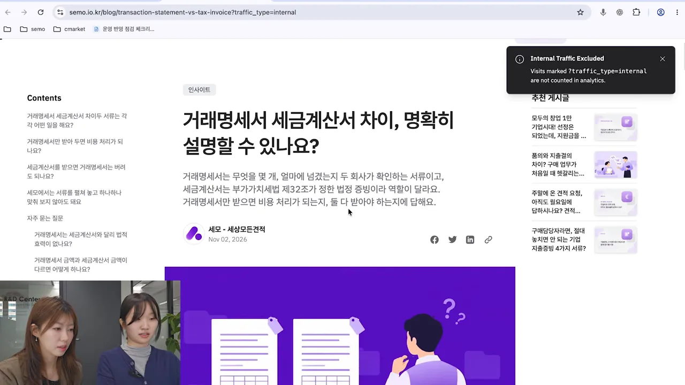
본문에는 거래명세서, 세금계산서 양식 이미지가 항목까지 똑같이 들어가 있어요. 아래 화면의 기울어진 인용문은 실무자가 겪을 상황을 직접 가정해서 쓴 거예요. 게스트는 예전에 "링크도 걸어 달라"고 했던 걸 AI가 기억하고 관련 글 링크를 알아서 넣었다고 해요.
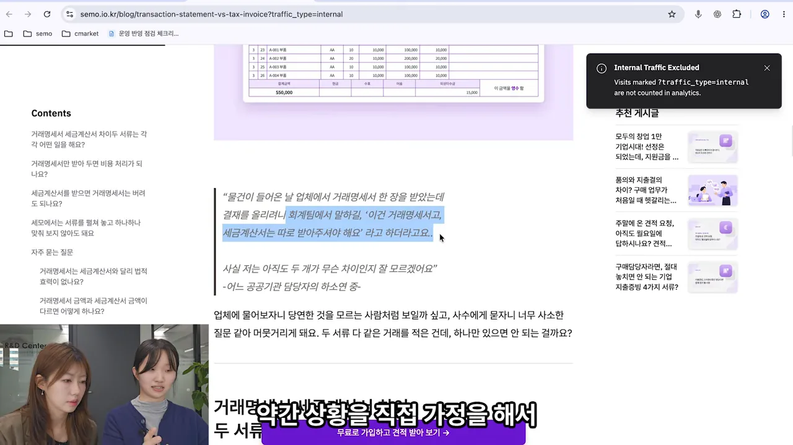
릴스: 레퍼런스 찾기부터 내레이션까지
릴스는 아예 처음부터 끝까지 AI가 만들었어요. 내레이션 음성도 AI예요. 소재는 '연말에 예산이 남으면 다 써야 하는 구청 담당자'예요. "예산 소진이 안 된 구매 담당자의 입장에서, 공감되면서 웃음 포인트가 있는 레퍼런스를 찾아와라"라고 시켰더니 그런 형식의 레퍼런스를 찾아왔어요.
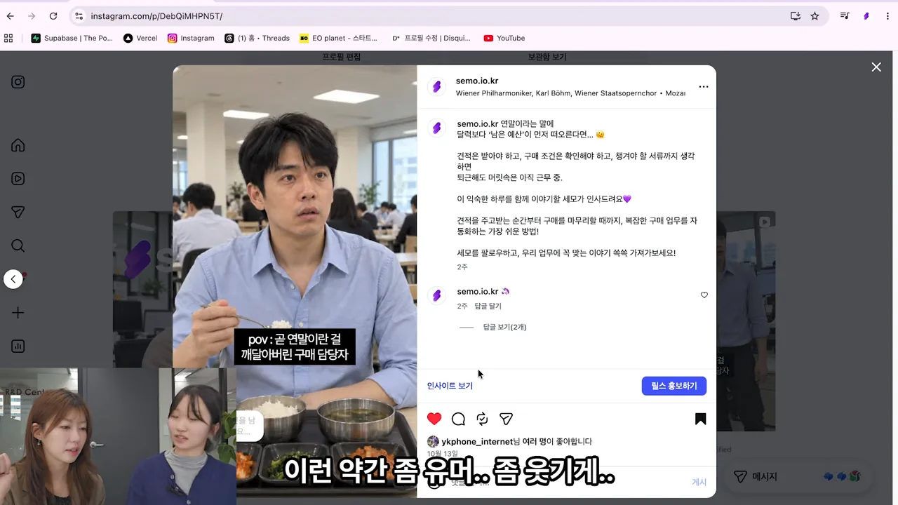
카드뉴스: 실제 공고를 찾아 넣기
카드뉴스는 축제 소재만 던져 주고 "기업이 봤을 때 궁금할 만한 내용으로 써 봐라"라고 시켰어요. 피그마 화면의 첫 장 '지역축제에서 받은 굿즈 누가 어떻게 납품했을까?'에 들어간 손 사진은 실제 사진이 아니에요. 힉스필드를 연결해 "진짜 기업이나 기관에서 만든 축제 굿즈처럼 만들어 봐라"라고 해서 만든 이미지예요.
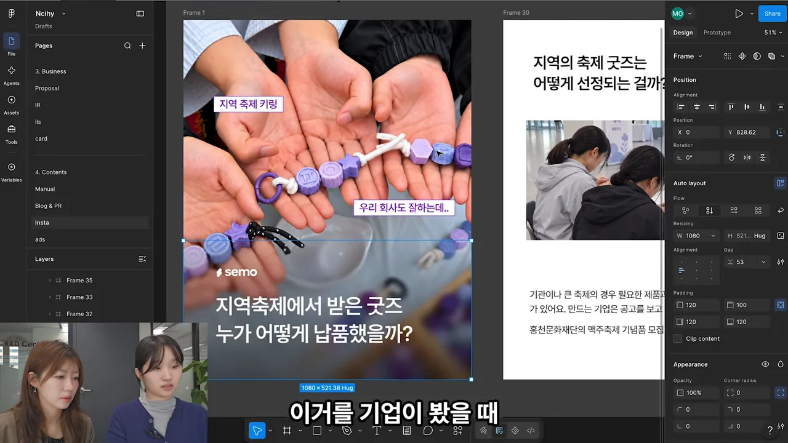
내용은 실제 공고에서 왔어요. AI가 홍천에서 나온 기념품 공고를 찾아 발췌해 왔어요. 아래 장의 표 왼쪽이 공고에 적힌 굿즈 제안 기준 '제10회 홍천강 별빛음악 맥주축제의 특성이 담긴 기념품'이고, 오른쪽이 예시 '티셔츠, 키링, 마그넷 등'이에요.
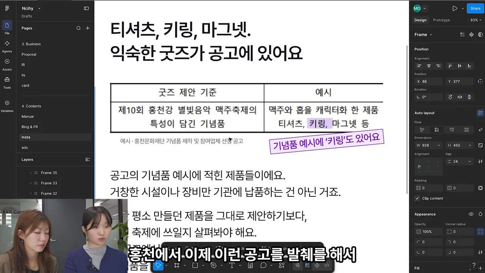
진행자가 "이게 다 스킬을 써서 만든 거죠?"라고 묻자 게스트는 그렇다고 답해요.
릴스는 네 단계로 만들어요
"오늘 릴스를 하나 만들어야 한다면 어떻게 하냐"는 질문에 게스트는 문서 하나를 띄워요. '릴스 자동화 프로세스'예요. 맨 위 문단은 릴스를 네 단계로 나누고, 영상은 만들 때마다 크레딧이 들어서 단계마다 사람이 확인해야 다음으로 넘어가게 했다고 적혀 있어요. 아래 상자는 Claude에 연결해 둔 도구 다섯 가지예요.
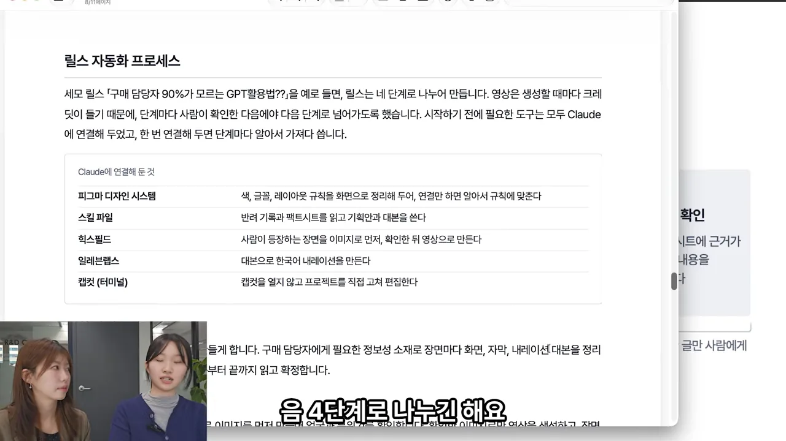
| Claude에 연결해 둔 것 | 하는 일 (화면 문서 그대로) |
|---|---|
| 피그마 디자인 시스템 | 색, 글꼴, 레이아웃 규칙을 화면으로 정리해 두어, 연결만 하면 알아서 규칙에 맞춘다 |
| 스킬 파일 | 반려 기록과 팩트시트를 읽고 기획안과 대본을 쓴다 |
| 힉스필드 | 사람이 등장하는 장면을 이미지로 먼저, 확인한 뒤 영상으로 만든다 |
| 일레븐랩스 | 대본으로 한국어 내레이션을 만든다 |
| 캡컷 (터미널) | 캡컷을 열지 않고 프로젝트를 직접 고쳐 편집한다 |
네 단계와 사람이 들어가는 자리
게스트가 말로 설명한 순서를 한 줄로 그리면 이래요. 아래 작은 글씨가 그 단계에서 사람이 하는 일이에요.
- 타이포 규칙부터 정해요 — AI가 터무니없는 글꼴을 쓸 때가 있어서예요.
- 스킬 파일을 읽고 스토리보드를 만들게 해요 — 장면마다 화면, 자막, 내레이션 대본을 정리하게 해요. 레퍼런스는 무조건 같이 달라고 해요. 스토리보드만 믿고 만들었다가 엉뚱하게 나온 적이 있어서예요.
- 이미지를 먼저 만들어 봐요 — 내용이 괜찮으면 영상 전에 이미지부터 보고, 괜찮을 때만 영상을 만들어요. 장면이 바뀌어도 같은 사람으로 보이게 얼굴과 머리 모양을 유지하라는 지시도 넣어요.
- 터미널에서 캡컷을 편집해요 — 캡컷에서 이어서 편집할 수 있게 만들어 달라고 해요. 글자만 고치면 되는 부분은 사람이 직접 고쳐요.
문서의 1, 2단계 설명은 아래처럼 적혀 있어요. '이미지 먼저, 그다음 영상' 아래 캡처는 캡컷 타임라인과 AI로 만든 인물 이미지예요.
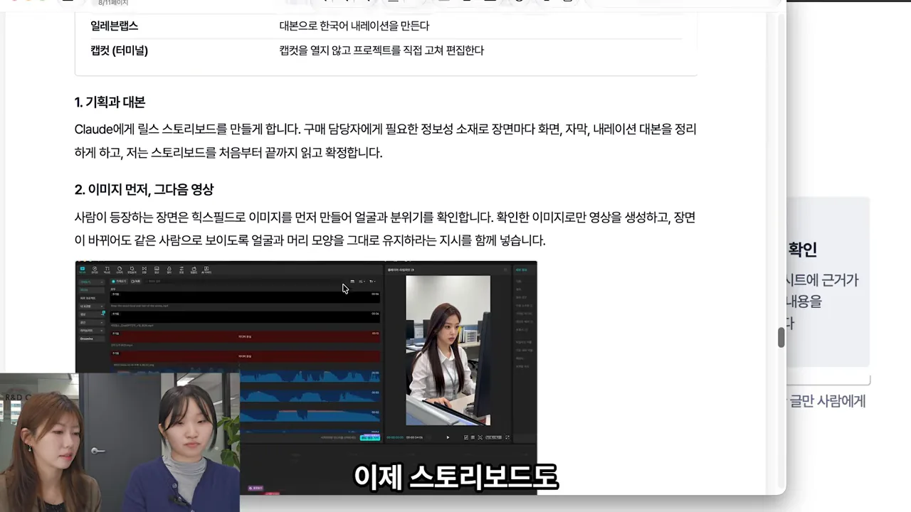
실제로 터미널에서 시켜 봐요
게스트가 Claude Code에 "캡컷에 1013 프로젝트 영상 편집할 건데 너 연결되어 있니?"라고 물어요. 그 바로 아래 줄이 답이에요. Claude Code가 캡컷 프로젝트 폴더에서 1013이 있는지 확인하겠다고 하고, 폴더를 찾는 명령을 실행해요.
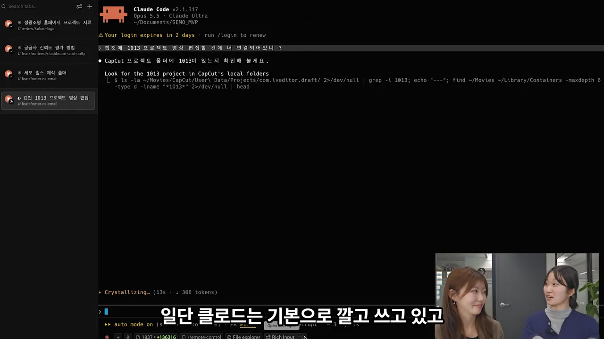
"전체적으로 루즈하니까 템포를 올려 줘"라고 하자 Claude가 템포를 올렸다고 답해요. 캡컷을 다시 열어 보면 아래처럼 컷이 빨라져 있고, 음원은 잘려 있어요.
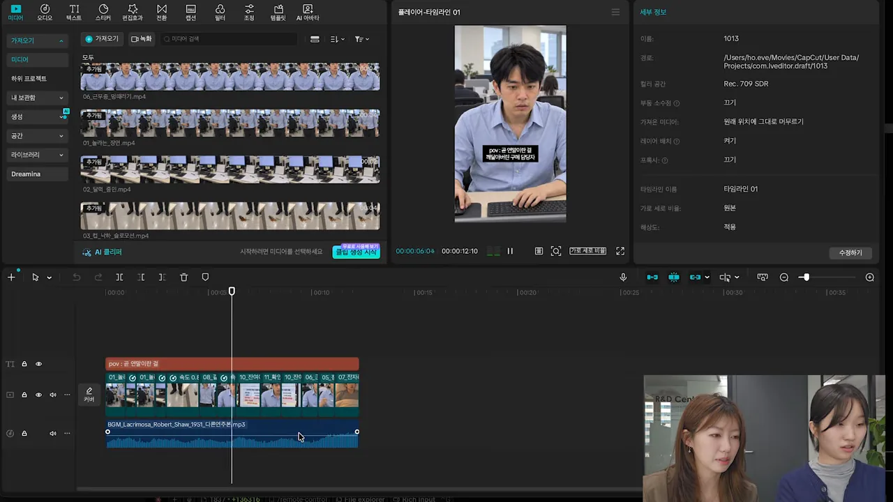
왜 터미널인가요
진행자가 ChatGPT 앱, Claude 데스크탑, 제미나이도 있는데 왜 굳이 터미널의 Claude Code를 쓰냐고 물어요. 게스트는 릴스 편집이 코드 기반으로 돌아간다고 알고 있고, 터미널에서 할 때 말을 유독 잘 알아듣는 느낌이라 릴스는 터미널에서 한다고 답해요. 글과 영상 편집 모두 Claude가 낫다고 느낀다고 해요.
도구는 용도별로 나눠 써요. Claude 데스크탑 앱은 블로그, 스레드 같은 예약 작업에 써요. 아래 화면 왼쪽 메뉴의 '예약됨' 아래에 '세모 블로그 주간 초안', '세모 스레드 주간 초안' 같은 작업이 걸려 있어요. UI(User Interface)나 랜딩 페이지 디자인은 ChatGPT를 많이 쓰는데, 진행자도 ChatGPT가 디자인을 은근 잘한다고 맞장구쳐요.
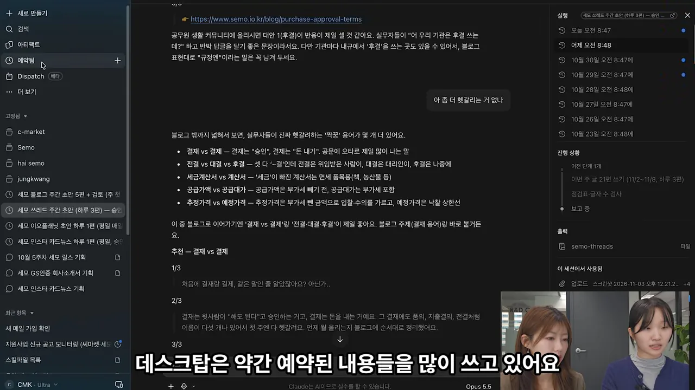
게스트는 AI를 쓰면서 가장 중요한 건 언제 사람이 들어가고 빠지느냐라고 정리해요.
AI와 나눠 하는 하루, 그리고 댓글 실험
"회사에 오면 뭐부터 하냐"는 질문에 게스트는 표 하나를 보여 줘요. 세로는 시간대, 가로는 '나', 'Claude', '자동 실행·도구' 세 칸이에요. 번호는 하루 동안 일이 일어나는 순서예요. 새벽 줄에는 사람 칸이 비어 있고, 오른쪽 자동 실행 칸만 차 있어요.
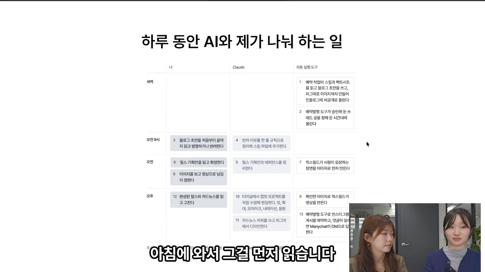
표의 글씨가 작아서 옮겨 적으면 이래요.
| 시간 | 나 | Claude | 자동 실행·도구 |
|---|---|---|---|
| 새벽 | — | — | ① 예약 작업이 스킬과 팩트시트를 읽고 블로그 초안을 쓰고, 피그마로 이미지까지 만들어 블로그에 비공개로 올려요 ② 예약 발행 도구가 승인해 둔 스레드 글을 정해 둔 시간에 올려요 |
| 오전 9시 | ③ 블로그 초안을 처음부터 끝까지 읽고 발행하거나 반려해요 | ④ 반려 이유를 한 줄 규칙으로 정리해 스킬 파일에 추가해요 | — |
| 오전 | ⑥ 릴스 기획안을 읽고 확정해요 ⑧ 이미지를 보고 영상으로 넘길지 정해요 | ⑤ 릴스 기획안과 레퍼런스를 정리해요 | ⑦ 힉스필드가 사람이 등장하는 장면을 이미지로 먼저 만들어요 |
| 오후 | ⑫ 완성된 릴스와 카드뉴스를 읽고 고쳐요 | ⑩ 터미널에서 캡컷 프로젝트를 직접 수정해 편집해요(컷, 확대, 모자이크, 내레이션, 음원) ⑪ 카드뉴스 카피를 쓰고 피그마에서 디자인해요 | ⑨ 확인한 이미지로 힉스필드가 영상을 만들어요 ⑬ 예약 발행 도구로 인스타그램 게시를 예약하고, 댓글이 달리면 Manychat이 DM(Direct Message)으로 답해요 |
눈여겨볼 곳은 ③과 ④예요. 사람이 블로그 초안을 반려하면, Claude가 그 이유를 규칙 한 줄로 바꿔 스킬 파일에 넣어요. 앞에서 본 '스킬을 계속 고친다'는 말이 하루 일과 안에 들어가 있는 셈이에요.
게스트의 말로 하루를 따라가면 이래요. 자는 동안 예약된 에이전트가 스킬과 팩트시트를 읽고 블로그 초안을 써 둬요. 아침에 출근하면 그걸 먼저 읽어요. 다음은 릴스예요. 릴스 기획안도 새벽에 돌릴 수 있지만, 레퍼런스를 같이 보고 싶어서 일부러 출근 뒤에 함께 짜요. 확정하면 "만들어라"라고 하고 다시 블로그를 봐요. SNS에 집중하는 날이면 오후쯤 콘텐츠가 다 나와요.
댓글 활동도 AI에게 맡겨 봐요
요즘 실험 중인 건 댓글 활동이에요. 게스트는 Aside라는 도구를 써요. Claude로 여는 웹은 AI가 활동하는 게 티가 나서, 사람이 활동하는 것처럼 탐색해 주는 도구를 고른 거예요. 아래 화면 오른쪽 위 말풍선이 게스트의 요청이에요. 세모 스레드 주소와 함께 "우리 쓰레드 활동 좀 도와줘"라고 쓰고, 타깃을 '공공기관 구매 담당자(신입)'와 '공공기관에 물건을 납품하고 싶은 기업 영업팀장' 두 개로 줬어요.
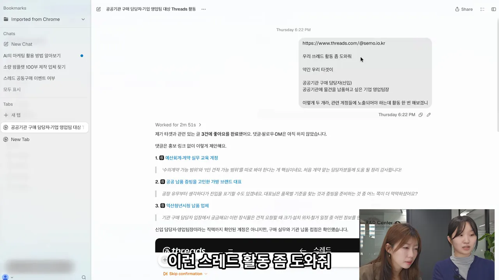
테스트로 세 개만 달아 보라고 했는데, 꽤 사람처럼 달았어요. 아래는 그중 하나예요. 위 글은 '공공기관 납품 때 직접 생산 증명서 있냐고 물어본다'는 창업자의 글이고, 그 아래 semo.io.kr 계정이 단 댓글이 Aside가 쓴 거예요. 칭찬으로 끝내지 않고 "어느 쪽이 더 막막하셨어요?"라고 질문을 던져요.
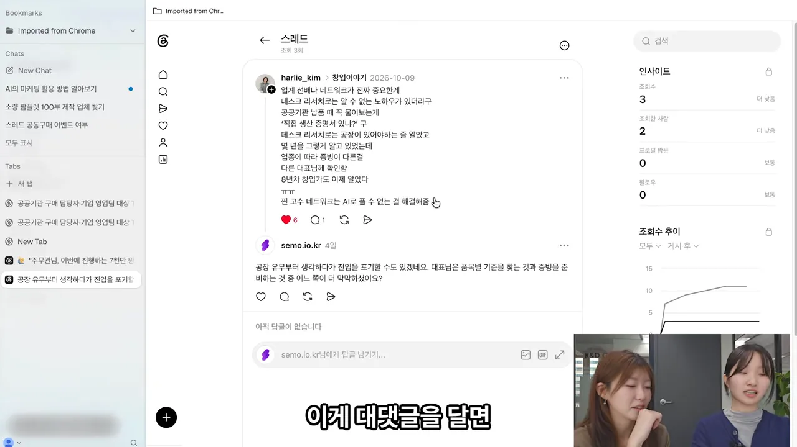
AI 냄새 안 나는 디자인: 글 먼저, 디자인은 나중
진행자는 개발자들이 늘 하는 고민을 꺼내요. 어떻게 하면 디자인에서 AI 냄새가 안 나고, 완성도 높은 웹사이트를 뽑을 수 있냐는 거예요. 게스트도 처음에는 "우리 이런 회사야, 예쁘게 만들어 줘"라고만 했어요. 그러면 쓸데없는 라벨이 잔뜩 붙고, 다 어두운 톤인 페이지가 나왔어요. 그래서 순서를 정했어요.
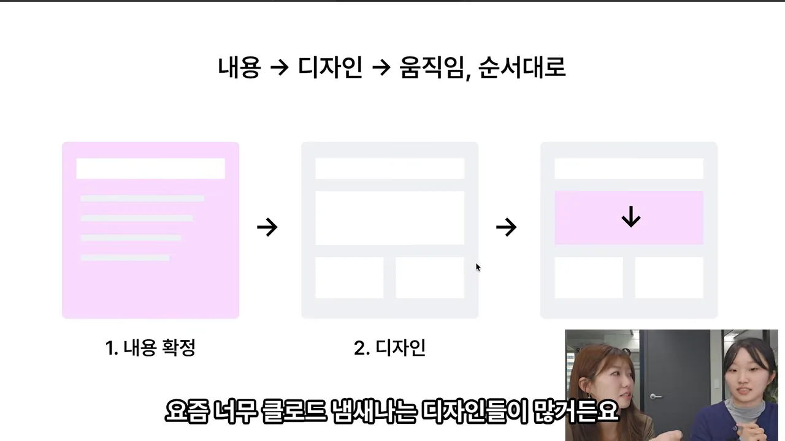
1단계: 텍스트와 구조
섹션 순서와 카피를 디자인 없이 텍스트로만 받아요. 아래 화면처럼 파란 링크와 검은 글자만 있는 날것의 페이지예요. 버튼 자리도 회색 상자 하나로만 표시돼 있어요. 이 상태에서 글만 읽으며 고치고 확정해요.
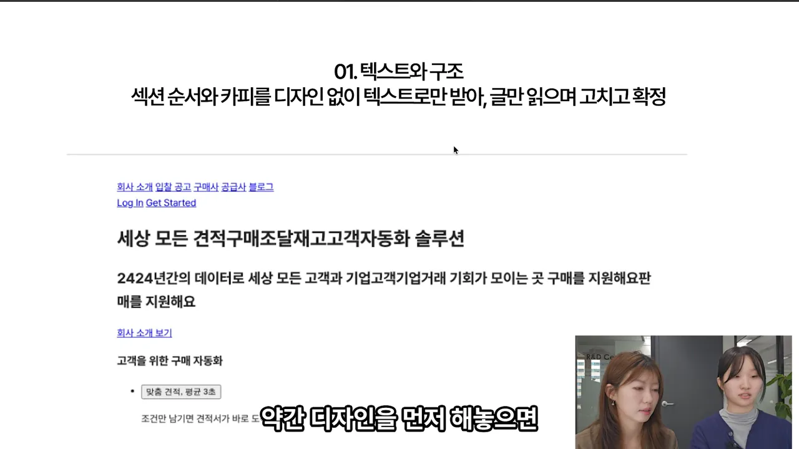
2단계: 디자인 시스템 적용
카피가 완성되면 우리 디자인 시스템을 적용해서 여러 섹션을 고치게 해요. 앞 화면의 텍스트가 아래처럼 세모 로고와 메뉴, '세상 모든 견적 / 자동화 솔루션' 헤드라인이 자리 잡은 페이지로 바뀌어요.
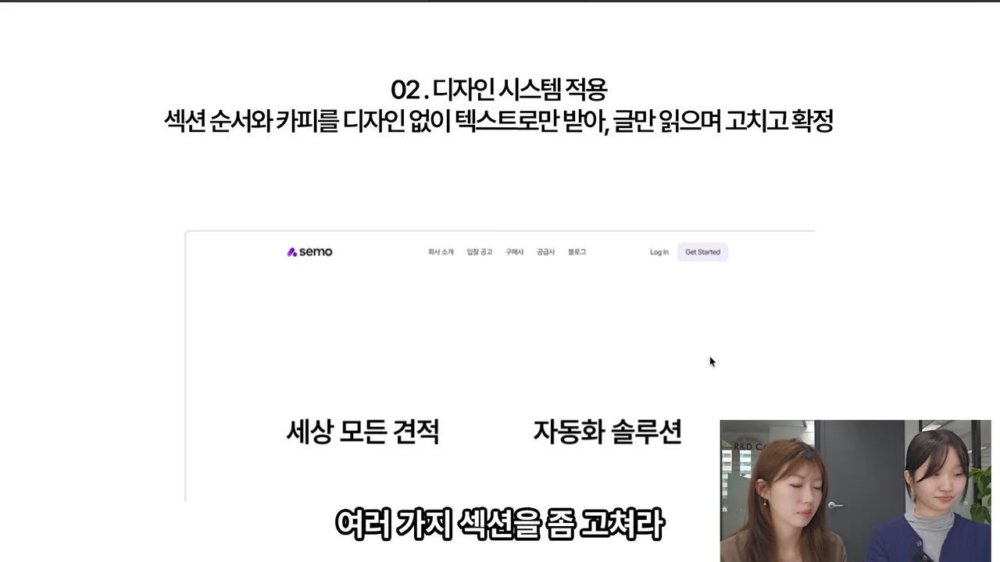
완성된 세모 랜딩 페이지예요. 왼쪽 태블릿 화면은 스크롤에 맞춰 사진이 움직여요. 오른쪽은 '세상 모든 기업 판매를 지원해요' 아래로 '견적 작성은 자동으로', '내 제품에 맞는 공고', '채팅에서 계약까지' 세 줄이 이어져요.
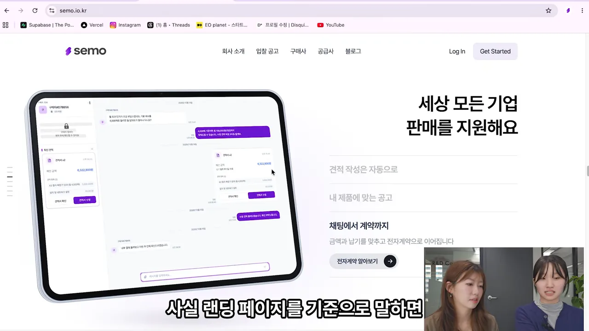
게스트는 랜딩 페이지라면 자기만의 디자인 시스템이 꼭 있어야 한다고 강조해요. AI에게 그냥 만들어 달라고 하면 '방방 뛰는' 화면을 짜고, 무엇보다 우리 화면이 아니에요. 만들어 둔 시스템을 먹여야 잘 나와요. 기획 단계에서 섹션별로 '이렇게 할 거야, 이런 레퍼런스야'를 정해 두면 한 번에 잘 나온다고 해요.
코딩알려주는누나 랜딩 페이지 비포 앤 애프터
진행자의 웹사이트가 '방방 뛰어서' 최근에 바꿨다는 이야기가 나오자, 게스트가 같은 방식으로 새로 만들어 본 랜딩 페이지를 보여 줘요. 먼저 기존 카피를 텍스트 기반으로 살렸고, 수강생들이 만든 서비스를 앞에 세웠어요. 첫 화면 헤드라인이 '비전공자 938명이 AI로 진짜 서비스를 만들었습니다'예요.
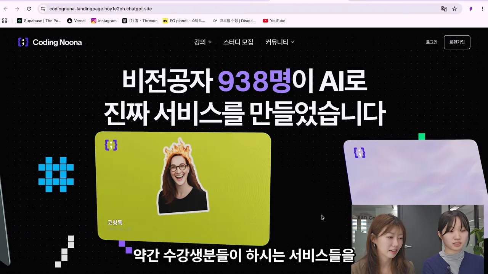
스크롤을 내리면 수치가 나와요. 강의 평점 5.0, 바이브코딩 수강생 938, 유튜브 구독자 130K+예요. 게스트는 '수치가 좋은 내용'이라 앞세웠다고 해요.
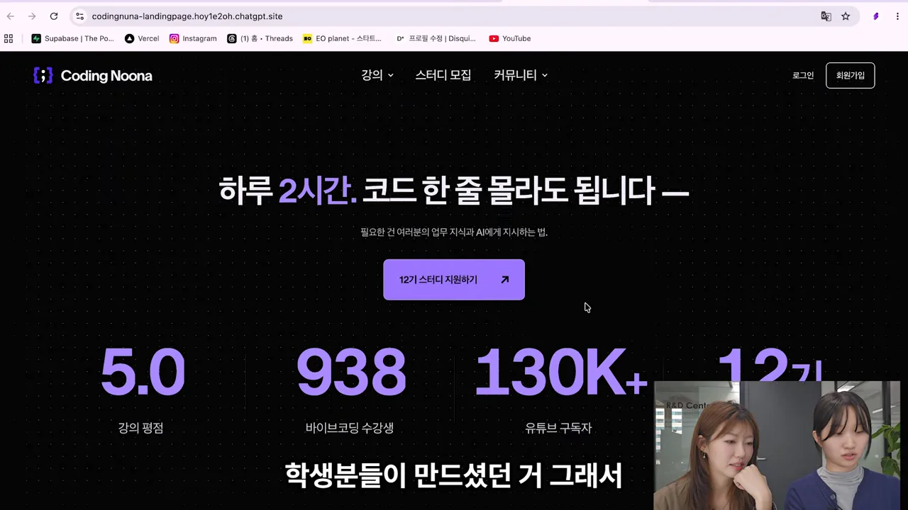
마지막 쪽에는 강의를 소개하는 섹션이 있어요. 왼쪽 큰 글씨가 '무엇을 만들지 서비스 관점에서 기획하고, 만든 걸 사용자에게 검증하는 능력이 있어야 끝까지 갑니다'예요. 진행자는 '성형 수술한 느낌'의 비포 앤 애프터라며 감탄해요.
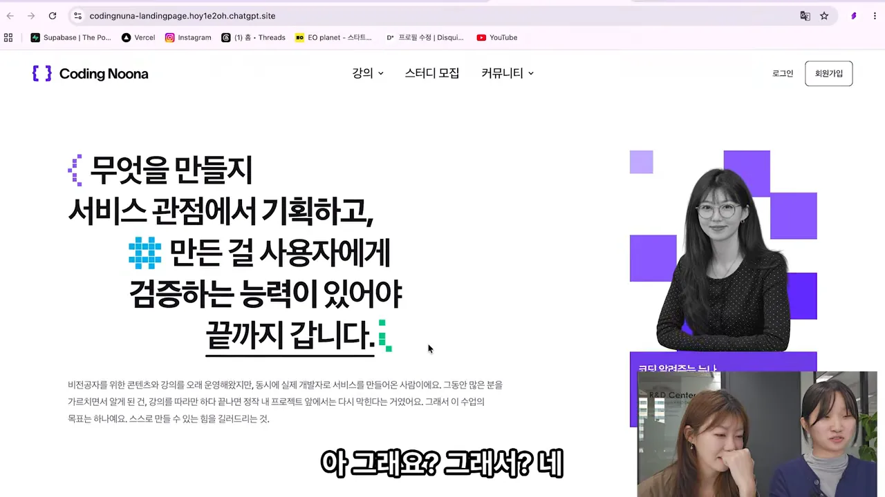
마지막 꿀팁
AI로 마케팅을 하고 싶은데 아직 잘 못 쓰는 사람에게 주는 팁은 단순해요. 당연한 말이지만 AI는 무조건 써 봐야 하고, 써 보면서 나만의 꿀팁을 찾아야 해요. 글쓰기처럼 이미 시행착오를 겪은 사람이 많은 영역은 그 사람들의 방법을 바탕으로 시작하면 지름길로 갈 수 있다고 해요.